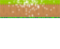
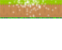

Platforms
 

The first platform is the fixed platform, during the game you will find it fixed and you can use them freely to skip as many times as necessary.
The second platform is the mobile platform, during the game you finding in movement and can use it in your favor, but with greater difficulty.
The third platform is the breakable platform, during the game you will find it fixed, but you can not use it in your favor because if you fall in it you will not jump again and you may lose the game.
The fourth platform is the only platform, during the game you will find it fixed, but be careful when using it, as you jump on it it will disappear and you will no longer have a chance to jump on the same platform.
You will find during the game a spring on top of one of the platforms, when jumping on top of it you will gain a strong boost that will give an incredible advantage of game.